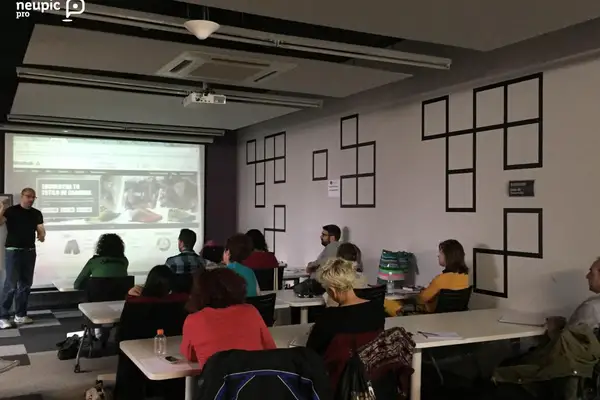

La importancia del diseño web para captar clientes
Consejos para lograr el éxito de nuestra web o app a través de la apariencia, el contenido y la usabilidad
 CREADA.28-04-2015 | 16:40 H / ÚLTIMA ACTUALIZACIÓN.28-04-2015 | 16:40 HApostar por un buen diseño, es una parte esencial, además de rentable, en el desarrollo de nuestro proyecto. Por ello, TOP Iniciativas nos
propone un taller basado en la iniciación al diseño de aplicaciones para captar nuevos clientes potenciales. El objetivo es poder analizar
las características de diseño de nuestra página web o app necesarias para mejorar la experiencia del usuario y para que nuestro producto
pueda llegar de la mejor manera posible.
La primera impresión siempre cuenta
Toda empresa busca retener la atención del posible cliente potencial que navega por primera vez por su web o app. De todo es sabido
que el diseño gráfico ha adquirido gran importancia en la forma de generar interés en los clientes y juega un papel muy importante en
ésta tarea. Si el usuario no cuenta con una buena primera impresión, seguramente termine abandonando nuestra página.
Actualmente, existen una serie de tendencias que ayudan a generar más oportunidades de negocio, pero no todas son aptas para